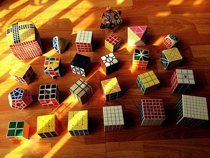
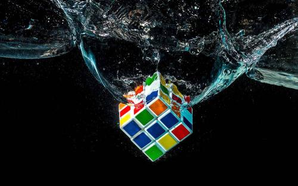
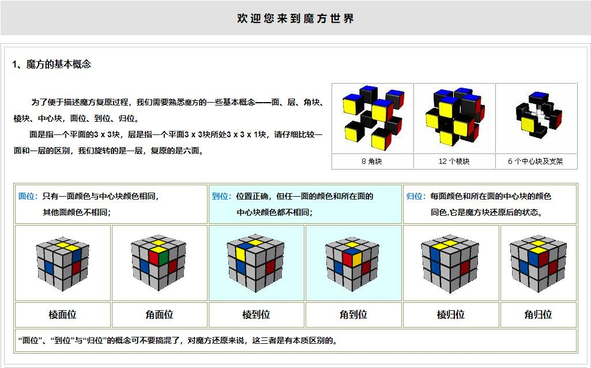

魔方主页
魔方介绍
魔方结构
魔方教程
魔方介绍
魔方介绍：
魔方，英文名为Rubik's Cube，又叫鲁比克方块，最早是由匈牙利布达佩斯建筑学院厄尔诺·鲁比克教授于1974年发明的。魔方是一项手部极限运动。台湾地区称之为魔术方块，香港地区称之为扭计骰。 魔方（Rubik's Cube）狭义上指三阶魔方。三阶魔方形状通常是正方体，由有弹性的硬塑料制成。竞速玩法是将魔方打乱，然后在最短的时间内复原。截至2018年5月三阶魔方官方世界纪录是由来自澳大利亚的Feliks Zemdegs保持的4.22秒（单次）。 而从广义上看，魔方可以指各类可以通过转动打乱和复原的几何体。独立钻石棋一起被国外智力专家并称为智力游戏界的三大不可思议，而魔方受欢迎的程度更是智力游戏界的奇迹。

魔
方
概
念
